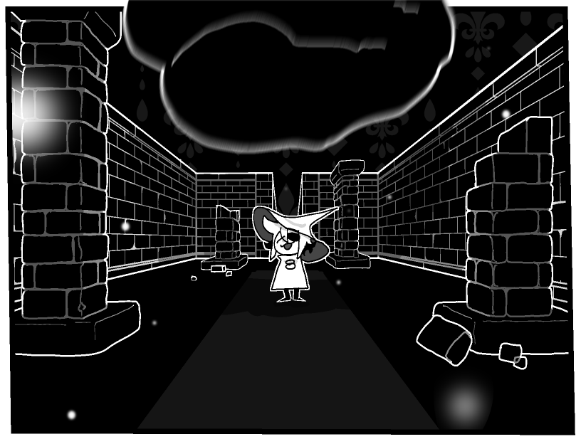

IDIOT CRUSHED BY ROCK
Siffrin, Traveller and Rogue, born in the island of ------, was crushed by a rock because he forgot about the goddang rock for the last time and since he could not loop time anymore, he stayed dead.
"STARS*, MY BONES!" - Siffrin's last words
 Siffrin will be taxidermied into a doll to be given to Bonnie, the team's token child. Bonnie was not consuled about this and in fact will most likely learn of this from reading this newspaper. Sorry Bonnie!
Siffrin will be taxidermied into a doll to be given to Bonnie, the team's token child. Bonnie was not consuled about this and in fact will most likely learn of this from reading this newspaper. Sorry Bonnie!
*Siffrin spoke a word in an unknown language here, but according to his boyfriend Isabeau it means 'Stars'
"I think I just became god!" Fangirl states before dying
Frankie, known for being a massive weeaboo, tried her best to become isekai-protag-level powerful and unfortunately it was too much. shes dead now. sorry frankie
"I DONT HAVE ANY IMAGES LEFT!" - Coder making this website shouts out. "But at least I fixed this."
"I have used this image of Siffrin to represent myself in two Real Life Projects"